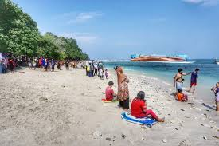
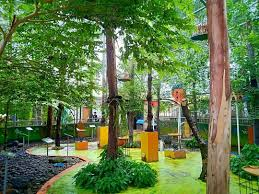
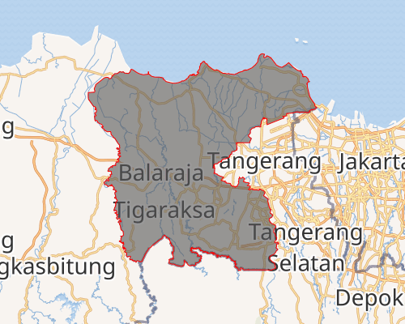

Mewujudkan Masyarakat Kabupaten Tangerang Yang Religius, Cerdas, Sehat dan Sejahtera
Hi User, Welcome To Website
Rekomendasi Wisata di Kabupaten Tangerang
Telaga Biru
Telaga Biru Cisoka menjadi wisata alam yang menyuguhkan pemandangan indah yang sangat memukau. Salah satu ciri khas dari Telaga biru sendiri adalah airnya yang dapat berubah warna.
Mangrove Ketapang
Rekomendasi tempat wisata di Tangerang Pasar Kemis yang pertama adalah Taman Wisata Alam Mangrove Ketapang. Kamu bisa menikmati pemandangan sembari melihat enam belas spesies pohon bakau yang dikembangkan.

Tanjung Kait
sejumlah wilayah di Pantai Utara (Pantura) Kabupaten Tangerang, wilayah Kecamatan Mauk dikenal memiliki pantai yang indah. Lihat saja Pantai Tanjung Kait yang berada di Desa Tanjung Anom. Selain keindahan pantai, para pengunjung juga akan disuguhi dengan hamparan tanaman semangka dan pohon kelapa.

Taman Burung Perak
Nikmati suara kicauan burung yang merdu di Taman Burung Perak. Tempat wisata ini menyediakan wisata rekreasi dan edukasi di mana kamu bisa melihat berbagai jenis burung.
Portofolio

Kabupaten Tangerang
Kabupaten Tangerang (bahasa Sunda: ᮒᮍᮨᮛᮀ) adalah sebuah kabupaten yang terletak di Provinsi Banten, Indonesia. Ibu kota kabupaten ini terletak di Kecamatan Tigaraksa. Tangerang terbagi menjadi 29 kecamatan, 28 kelurahan dan 246 desa. Pada pertengahan tahun 2024, jumlah penduduk kabupaten Tangerang sebanyak 3.373.149 orang.